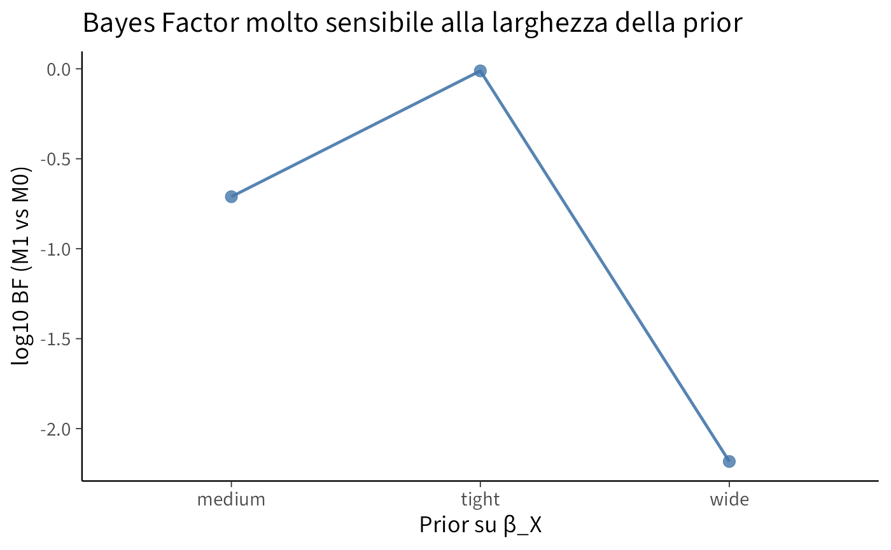

here::here("code", "_common.R") |>
source()
if (!requireNamespace("pacman")) install.packages("pacman")
pacman::p_load(cmdstanr, posterior, loo, bayesplot, brms, ggplot2, dplyr, tibble, forcats, MASS, tidyr, bridgesampling)
conflicts_prefer(posterior::ess_bulk)
conflicts_prefer(posterior::ess_tail)
conflicts_prefer(loo::loo)
conflicts_prefer(brms::ar)
conflicts_prefer(MASS::area)
conflicts_prefer(bridgesampling::bf)
conflicts_prefer(dplyr::count)
conflicts_prefer(dplyr::dim_desc)
conflicts_prefer(brms::dstudent_t)
conflicts_prefer(tidyr::extract)
conflicts_prefer(stats::fisher.test)
conflicts_prefer(stats::lag)
conflicts_prefer(posterior::match)
conflicts_prefer(brms::pstudent_t)
conflicts_prefer(brms::qstudent_t)
conflicts_prefer(brms::rstudent_t)
conflicts_prefer(bayesplot::theme_default)48 Confronto tra modelli bayesiani: dal Bayes Factor al LOO/ELPD
Introduzione
Confrontare modelli è un passaggio cruciale di ogni analisi scientifica: significa chiedersi quale, tra ipotesi concorrenti, descriva meglio i dati disponibili e, soprattutto, quale offra previsioni più accurate per nuove osservazioni. Nei capitoli precedenti abbiamo introdotto la procedura del ΔELPD come strumento per quantificare la differenza di accuratezza predittiva tra modelli. Questo approccio, fondato sulla Leave-One-Out Cross Validation (LOO-CV) e sull’Expected Log Predictive Density (ELPD), ci ha permesso di valutare i modelli in termini di capacità predittiva fuori campione, ponendo l’accento su un criterio pragmatico e interpretabile.
In questo capitolo mettiamo il ΔELPD a confronto con un metodo alternativo e tradizionalmente molto diffuso nella statistica bayesiana: il Bayes Factor (BF). Il BF si basa sulla comparazione delle marginal likelihoods dei modelli, ossia sulla probabilità complessiva che ciascun modello assegna ai dati osservati, integrata rispetto alla distribuzione a priori dei parametri.
Attraverso due esempi simulati illustreremo i punti di forza e i limiti di questi due approcci. Nel primo scenario mostreremo come LOO/ΔELPD identifichi correttamente il modello più complesso quando l’effetto da stimare è effettivamente presente. Nel secondo scenario, in cui l’effetto è nullo, vedremo invece come LOO/ΔELPD restituisca un verdetto stabile, mentre il Bayes Factor risenta in misura considerevole della scelta delle prior, fino a produrre conclusioni opposte a seconda della loro specificazione.
L’obiettivo del capitolo è dunque duplice: da un lato chiarire le differenze concettuali tra Bayes Factor e ΔELPD, dall’altro motivare, sul piano metodologico, perché nella pratica della ricerca psicologica sia preferibile adottare criteri predittivi come LOO/ΔELPD per il confronto tra modelli.
Panoramica del capitolo
- Introdurre il Bayes Factor come criterio alternativo di confronto tra modelli.
- Valutare gli effetti della scelta delle prior sul Bayes Factor.
- Confrontare i risultati del BF con quelli ottenuti tramite ΔELPD/LOO.
48.1 Scenario A — L’interazione tra ansia di tratto e periodo d’esame
Immaginiamo uno studio sul livello di affetto negativo (NA) di un gruppo di studenti. Ogni studente viene misurato più volte prima e dopo un esame, e per ciascuno conosciamo anche il punteggio di ansia di tratto (trait_z, standardizzato). L’ipotesi è che gli studenti con ansia-tratto elevata mostrino un aumento maggiore di NA durante il periodo dell’esame: in altre parole, ci aspettiamo un’interazione tra post (pre/post esame) e trait_z.
48.1.1 Simulazione dei dati
set.seed(42)
# Parametri simulazione
N_id <- 120
n_pre <- 3
n_post <- 3
trait_by_id <- rnorm(N_id, mean = 0, sd = 1.2)
# Effetti veri
beta_0 <- 0.0
beta_1 <- 0.2 # effetto medio di post
beta_2 <- 0.5 # effetto trait
beta_3 <- 1.0 # interazione forte
sigma_e <- 0.5 # rumore residuo
# Random effects con correlazione
sd_u0 <- 0.6; sd_u1 <- 0.7; rho_u <- 0.5
Sigma_u <- matrix(c(sd_u0^2, rho_u*sd_u0*sd_u1,
rho_u*sd_u0*sd_u1, sd_u1^2), 2, 2)
U <- MASS::mvrnorm(N_id, mu = c(0,0), Sigma = Sigma_u)
u0 <- U[,1]; u1 <- U[,2]
# Dataset lungo
dat <- tidyr::expand_grid(
id = 1:N_id,
time = 1:(n_pre + n_post)
) %>%
mutate(
post = as.integer(time > n_pre),
trait_z = trait_by_id[id],
u0_id = u0[id],
u1_id = u1[id],
mu = beta_0 + beta_1*post + beta_2*trait_z + beta_3*post*trait_z +
u0_id + u1_id*post,
NA_score = rnorm(n(), mu, sigma_e)
)Abbiamo quindi un dataset con più osservazioni per ciascuno studente, dove l’interazione Post × Trait è davvero presente.
48.1.2 Due modelli a confronto
Il primo modello (M0) include solo gli effetti principali di post e trait_z e un intercetta casuale per studente. Il secondo modello (M1) aggiunge l’interazione Post × Trait e permette un effetto random sulle slopes per la variable post.
priors_common <- c(
prior(student_t(3, 0, 2.5), class = "Intercept"),
prior(normal(0, 1), class = "b"),
prior(student_t(3, 0, 2.5), class = "sigma"),
prior(student_t(3, 0, 2.5), class = "sd")
)
# Modello M0
fit_M0 <- brm(
NA_score ~ 1 + post + trait_z + (1 | id),
data = dat, family = gaussian(),
prior = priors_common,
backend = "cmdstanr",
iter = 2000, warmup = 1000, chains = 4, cores = 4
)
# Modello M1
fit_M1 <- brm(
NA_score ~ 1 + post*trait_z + (1 + post | id),
data = dat, family = gaussian(),
prior = priors_common,
backend = "cmdstanr",
iter = 2000, warmup = 1000, chains = 4, cores = 4
)48.1.3 Confronto con LOO/ELPD
loo_M0 <- loo(fit_M0)
loo_M1 <- loo(fit_M1)
loo_compare(loo_M1, loo_M0)
#> elpd_diff se_diff
#> fit_M1 0.0 0.0
#> fit_M0 -340.1 20.0Il risultato mostra che M1 ha un ELPD più alto, con differenza superiore all’incertezza: segno che predice meglio nuovi dati. Questo è ciò che ci aspettiamo, dato che l’interazione è reale.
48.1.4 Visualizzare le differenze punto per punto
Possiamo guardare dove M1 vince su M0.
elpd_diff <- loo_M1$pointwise[,"elpd_loo"] - loo_M0$pointwise[,"elpd_loo"]
df_elpd <- dat %>%
mutate(
diff = elpd_diff,
postF = factor(post, labels = c("Pre-esame","Post-esame"))
)
ggplot(df_elpd, aes(x = trait_z, y = diff, color = postF)) +
geom_hline(yintercept = 0, linetype = 2) +
geom_point(alpha = 0.45) +
geom_smooth(se = FALSE, method = "loess") +
labs(x = "Ansia di tratto (z)", y = "Differenza ELPD (M1 - M0)",
color = "Periodo",
title = "M1 migliora la predizione") 
Il grafico mostra chiaramente che M1 ha un vantaggio rispetto a M0: la differenza ELPD (M1 - M0) tende ad essere positiva per la maggioranza delle osservazioni.
48.2 Scenario B — Un predittore inutile
Per capire i limiti del Bayes Factor, consideriamo ora uno scenario in cui non c’è alcun effetto reale. Immaginiamo di misurare l’affetto negativo NA_score come variabile casuale standard normale, e di registrare un predittore X (ad esempio “ore di studio ieri”) che in realtà non ha alcuna relazione con NA_score.
set.seed(2025)
N <- 80
X <- scale(rnorm(N))
y <- rnorm(N, mean = 0, sd = 1)
dat_b <- tibble(NA_score = as.numeric(y), X = as.numeric(X))48.2.1 Due modelli
- M0: solo intercetta.
- M1: aggiunge X come predittore.
Stimiamo M1 con tre prior diverse su β_X: stretta (Normal(0,0.1)), media (Normal(0,1)), e larghissima (Normal(0,30)).
priors_base <- c(
prior(student_t(3, 0, 2.5), class = "Intercept"),
prior(student_t(3, 0, 2.5), class = "sigma")
)
fit_M0 <- brm(NA_score ~ 1, data = dat_b, family = gaussian(),
prior = priors_base,
backend = "cmdstanr",
iter = 3000, warmup = 1500, chains = 4, cores = 4)
fit_M1_tight <- brm(NA_score ~ 1 + X, data = dat_b, family = gaussian(),
prior = c(priors_base,
prior(normal(0, 0.1), class = "b", coef = "X")),
backend = "cmdstanr",
iter = 3000, warmup = 1500, chains = 4, cores = 4)
fit_M1_medium <- brm(NA_score ~ 1 + X, data = dat_b, family = gaussian(),
prior = c(priors_base,
prior(normal(0, 1), class = "b", coef = "X")),
backend = "cmdstanr",
iter = 3000, warmup = 1500, chains = 4, cores = 4)
fit_M1_wide <- brm(NA_score ~ 1 + X, data = dat_b, family = gaussian(),
prior = c(priors_base,
prior(normal(0, 30), class = "b", coef = "X")),
backend = "cmdstanr",
iter = 3000, warmup = 1500, chains = 4, cores = 4)48.2.2 Confronto con LOO
loo_M0 <- loo(fit_M0)
loo_M1_tight <- loo(fit_M1_tight)
loo_M1_medium <- loo(fit_M1_medium)
loo_M1_wide <- loo(fit_M1_wide)
loo_compare(loo_M0, loo_M1_tight, loo_M1_medium, loo_M1_wide)
#> elpd_diff se_diff
#> fit_M1_tight 0.0 0.0
#> fit_M0 0.0 0.4
#> fit_M1_wide -0.2 0.5
#> fit_M1_medium -0.2 0.4Il risultato mostra differenze minime e non robuste: nessun modello ha un vantaggio predittivo. In altre parole, includere X non migliora la predizione, indipendentemente dalla prior.
48.2.3 Confronto con Bayes Factor
set.seed(123)
bs_M0 <- bridge_sampler(fit_M0, silent = TRUE)
bs_M1_tight <- bridge_sampler(fit_M1_tight, silent = TRUE)
bs_M1_medium <- bridge_sampler(fit_M1_medium, silent = TRUE)
bs_M1_wide <- bridge_sampler(fit_M1_wide, silent = TRUE)
BF_tight <- bayes_factor(bs_M1_tight, bs_M0)$bf
BF_medium <- bayes_factor(bs_M1_medium, bs_M0)$bf
BF_wide <- bayes_factor(bs_M1_wide, bs_M0)$bfc(BF_tight = BF_tight, BF_medium = BF_medium, BF_wide = BF_wide)
#> BF_tight BF_medium BF_wide
#> 0.97371 0.19455 0.00657I risultati cambiano molto:
- Con prior stretta, BF vicino a 1 → nessuna preferenza.
- Con prior media, BF già a favore di M0.
- Con prior larghissima, BF crolla a fortissimo favore di M0.
Questa dipendenza è un effetto della cosiddetta Occam penalty: la marginal likelihood penalizza fortemente modelli con prior larghe, anche se la capacità predittiva è identica.
48.2.4 Visualizzazione
Per prima cosa possiamo esaminare i valori di ELPD ottenuti per il modello M1 con tre diverse scelte di prior sul coefficiente della variabile X:
df_plot <- tibble(
prior = c("tight","medium","wide"),
elpd = c(loo_M1_tight$estimates["elpd_loo","Estimate"],
loo_M1_medium$estimates["elpd_loo","Estimate"],
loo_M1_wide$estimates["elpd_loo","Estimate"]),
bf = c(BF_tight, BF_medium, BF_wide)
)
df_plot
#> # A tibble: 3 × 3
#> prior elpd bf
#> <chr> <dbl> <dbl>
#> 1 tight -110. 0.974
#> 2 medium -110. 0.195
#> 3 wide -110. 0.00657Come si vede, i valori di ELPD rimangono pressoché invariati indipendentemente dall’ampiezza della prior. Ciò conferma che la valutazione predittiva tramite LOO/ELPD è robusta rispetto a questa scelta, restituendo un criterio stabile e direttamente interpretabile in termini di accuratezza predittiva fuori campione.
Passiamo ora al Bayes Factor.
p2 <- ggplot(df_plot, aes(prior, log10(bf), group = 1)) +
geom_point(size = 3) + geom_line() +
labs(x = "Prior su β_X", y = "log10 BF (M1 vs M0)",
title = "Bayes Factor molto sensibile alla larghezza della prior")
p2
Il grafico mostra invece l’elevata sensibilità del Bayes Factor alla specificazione della distribuzione a priori. Basta modificare l’ampiezza della prior sul coefficiente di X per ottenere conclusioni radicalmente diverse:
Prior informativa (stretta). Con una distribuzione concentrata attorno a valori ridotti, il log10(BF) rimane vicino a zero. Questo corrisponde a un Bayes Factor ≈ 1, cioè a un verdetto di indifferenza: i due modelli risultano sostanzialmente equivalenti rispetto ai dati.
-
Prior intermedia (media). Con una prior di ampiezza moderata, il Bayes Factor stimato è:
bf_medium <- df_plot %>% filter(prior == "medium") %>% pull(bf) bf_medium #> [1] 0.195In questo caso il log10(BF) è negativo, indicando che l’evidenza si sposta verso M0, ma in misura meno estrema rispetto alla prior larga.
-
Prior vaga (larga). Con una distribuzione molto diffusa, che assegna probabilità non trascurabili anche a effetti di grande entità, il Bayes Factor stimato è:
bf_wide <- df_plot %>% filter(prior == "wide") %>% pull(bf) bf_wide #> [1] 0.00657Per interpretarlo:
- il logaritmo in base 10 (
log10(bf_wide)) fornisce il valore mostrato nel grafico; - il reciproco (
1 / bf_wide) indica quante volte M0 è considerato più plausibile di M1.
In questo caso, il reciproco restituisce 152.3, il che significa che, pur avendo capacità predittiva sostanzialmente equivalente a M0, il modello M1 viene considerato circa 152.3 volte meno plausibile.
- il logaritmo in base 10 (
Questa analisi mette in evidenza un aspetto cruciale: il Bayes Factor non è un indicatore oggettivo, ma dipende in modo sostanziale dalle specificazioni a priori. La conclusione non deriva esclusivamente dai dati, bensì è co-determinata dalla scelta della prior: una prior stretta porta a un giudizio di equivalenza, mentre una prior larga può generare una forte evidenza a favore del modello nullo.
Ne consegue una raccomandazione metodologica fondamentale: ogni analisi basata sul Bayes Factor dovrebbe essere accompagnata da un’accurata analisi di sensitività, volta a verificare come le conclusioni cambino al variare di prior ragionevoli. In assenza di questa verifica, si rischia di confondere un artefatto dovuto alle assunzioni a priori con un’evidenza empirica.
48.3 Riflessioni conclusive
Gli esempi discussi ci hanno permesso di considerare due scenari opposti e complementari.
- Quando l’effetto è reale (Scenario A), il confronto basato su LOO/ELPD premia il modello più complesso, riflettendo la sua superiore capacità predittiva.
- Quando l’effetto è nullo (Scenario B), LOO segnala correttamente l’equivalenza predittiva tra i modelli, mentre il Bayes Factor produce valutazioni fortemente divergenti a seconda della prior scelta, fino a giungere a conclusioni diametralmente opposte.
Da questa analisi emergono alcuni messaggi chiave di natura metodologica:
- Il Bayes Factor rappresenta uno strumento con un’importanza storica indiscutibile, ma la sua elevata sensibilità alle scelte a priori e la sua instabilità nei modelli complessi ne limitano l’affidabilità pratica.
- L’ELPD stimato tramite LOO offre un criterio alternativo, fondato sulla capacità predittiva fuori campione. Si tratta di una misura intuitiva, interpretabile e robusta, che negli ultimi anni si è affermata come standard nella pratica bayesiana.
- In ambito psicologico, caratterizzato da dati intrinsecamente rumorosi e da modelli spesso gerarchici o complessi, l’adozione sistematica del LOO/ELPD come strumento principale di confronto tra modelli appare la scelta metodologicamente più solida e raccomandabile (Kruschke & Liddell, 2018).
Bibliografia
Kruschke, J. K., & Liddell, T. M. (2018). The Bayesian New Statistics: Hypothesis testing, estimation, meta-analysis, and power analysis from a Bayesian perspective. Psychonomic Bulletin & Review, 25(1), 178–206.